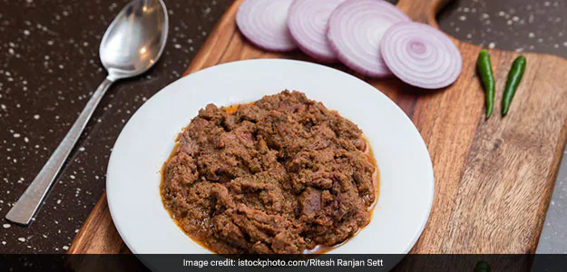

Kashmiri Harissa

Description
Kashmiri harissa is basically an authentic and
traditional mutton curry recipe that is usually eaten during
winters and best served with Kashmiri bread known as
Kashmiri Tchot.
Ingredients:
- 500 Gram Mutton
- 4 Garlic cloves
- 1/2 kg Chopped Onions (deep fried)
- 4-5 Black Pepper
- 2 tbsp Fennel Seeds
- 4 Cloves
- 1 Cinnamon stick
- 2 Badi elaichi
- 2-3 Choti elaichi
- 100 ml Milk
- Water
- 1/2 cup Crispy fried Onion
- 1/2 cup Rice Paste
Steps:
-
Add chopped mutton in a pressure cooker along with water, salt, both the
cardamom, garlic, fennel, cinnamon to it.
-
Pressure cook it until 2-3 whistles. Open the lid, let it simmer for
about 45 minutes to an hour. Once done, separate the bones and the whole
spices from the prepared mixture.
-
Now, with the help of a large cooking spoon, mix all the ingredients
together properly
-
To prepare rice paste, add the rice flour in the grinder along with cold
water
-
Put the pressure cooker back on flame and add the rice flour paste and
keep stirring the mixture
- Now add milk and then add about 1/2 cup oil
-
Cook it on medium high heat, stirring every 2 minutes to avoid
stickiness in the bottom. Keep using the spatula until you get the
desired consistency, may be for about 45 minutes till oil starts leaving
the sides of the cooker
-
.Serve hot with crispy fried onions and oil on top and also with
Kashmiri roti.